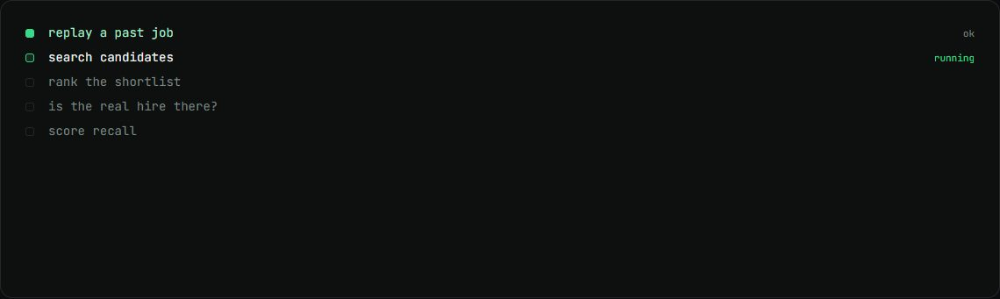

Candidate search evals
Measuring and fixing an AI candidate search for a US talent marketplace.
my role Forward Deployed Engineer: built the evals, found the fixes, now building features.
The problem
The client's AI search ranks candidates for each new job. Nobody could say how often it found the person who was actually hired, so every change was a guess.
How it works
- Replay past jobs and check whether the real hire shows up in the results.
- Compare semantic search with keyword and criteria search, and test each filter on its own.
- A/B test re-ranking models and prompts against the same set.
- Ship the changes that win, and correct the numbers in the open when a bigger run disagrees.
What changed
- 14% to 33%recall at 50 from one index fix
- 75%of real hires a hard country filter removed
- 41.7%recall at 100 for semantic search, vs 13.3% for keywords
What I built
- The evaluation harness and its checked numbers.
- The recall fix, country as a soft preference instead of a hard filter, and a longer shortlist.
- Later features in the client's search product, such as an intro-video language check.
Stack
- PostgreSQL
- pgvector
- TypeScript
- Node.js
- Claude Sonnet
Stills
